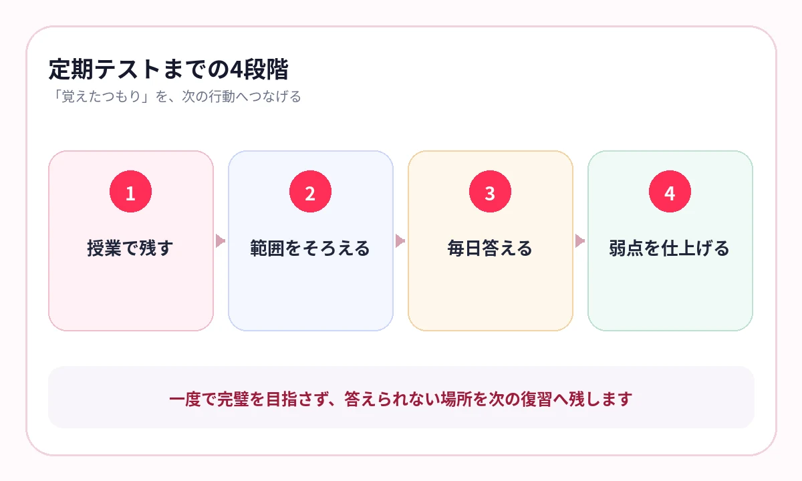

テスト範囲が発表されてから、「あのプリントがない」と探し始めていませんか？
中学の定期テストでは、教科書、学校ワーク、授業ノート、先生が配ったプリントが範囲になります。特に理科・社会は、重要語句と図表を短い期間で何度も確認できるかが得点に直結します。
直前にまとめ直すより、授業のたびに「もう一度答えるページ」を残しておく方が、テスト前の負担は小さくなります。
先生のプリントは、テスト対策の地図になる
定期テストは、授業で扱った内容を確認する試験です。先生が板書した言葉、繰り返し説明した図、プリントの太字や空欄は、何を理解してほしいかを示しています。
- 「ここは出す」と言われたページ
- 授業で時間をかけた図表
- ワークで何度も間違えた単元
- 用語は知っているが説明できない箇所
テスト前に新しい教材へ広げるより、授業で使った教材の穴を減らす方が先です。
テスト2週間前から、4段階で仕上げる
授業ごと
重要なプリントを1〜3枚残し、その日に一度答えます。
範囲発表
教科ごとに対象教材をそろえ、未着手と要復習を分けます。
1週間前
理科・社会は毎日少しずつ出題し、迷った教材へ印を残します。
前日・当日
新しい範囲を増やさず、「あやしい」「覚えていない」だけを確認します。
前日に全範囲を読むより、数日前から短く答える回数を増やす方が、知識を取り出しやすくなります。
{kind=link}

理科は「名称＋働き＋図」で答える
理科の用語は、名前だけで覚えると資料問題で迷います。植物なら名称と役割、人体なら器官と働き、化学なら物質名と変化をセットにします。
- 図のどこにあるか
- 何という名称か
- どんな働きがあるか
- 似た用語と何が違うか
教材の図を残したまま語句を隠すと、位置関係と意味を一緒に確認できます。
横にスワイプして画像を確認できます


社会は「用語＋つながり」で答える
歴史は人物名だけでなく、前後の出来事まで。地理は地域名だけでなく、気候・産業・地形まで。公民は制度名だけでなく、役割と関係までつなげます。
歴史
人物・出来事・理由・結果を一つの流れで確認します。
地理
場所・自然条件・産業・統計を同じページで見返します。
公民
制度・主体・役割・相互関係を図表で確認します。
テスト前は、弱点だけを短く回す
AI暗記シートでは、学校プリントを撮影し、重要語句をマスクして出題できます。出題後に「覚えた・あやしい・覚えていない」を記録し、次は弱点を優先して確認します。
テスト前日の役割は、全教材を最初から読み直すことではありません。まだ答えが不安定なページを見つけ、そこだけを仕上げることです。
直前に必要なのは、勉強量の追加ではなく、失点しそうな知識の特定です。
よくある質問
テスト勉強は何日前から始めればよいですか？
授業ごとに重要ページを残し、範囲発表後に本格的な出題へ移ると負担が分散します。少なくとも1週間前には一度全範囲を答えてください。
学校ワークとプリントはどちらを優先しますか？
提出や問題演習は学校ワーク、授業で強調された知識の確認はプリントと役割を分けます。両方で間違えた単元を最優先にします。
前日は何をすればよいですか？
新しいまとめを作らず、すでに「あやしい」「覚えていない」と分かっているページだけを短く確認します。
参考情報
試験範囲・制度は公式情報、復習方法は学習科学の研究を参照しています。
テスト範囲を、探すところから始めない
学校プリントを、毎日の5分で仕上げる
写真やPDFから重要語句を隠し、理科・社会の弱点を記録。テスト前は不安な教材から確認できます。
iPhone・iPad対応／3枚まで無料保存／継続利用は800円の買い切り